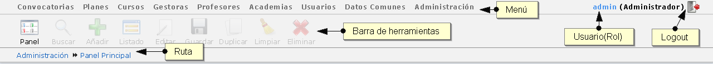

3. Cabecera

Cabecera
En la parte superior de la pantalla siempre aparecerá la misma información, y aunque es una interfaz sencilla, explicaremos su funcionamiento:
- Menu: Menú principal de la aplicación. Desde aquí podemos administrar todo el sistema. Las acciones comunes dentro de cada uno de los apartados son alta, listado y buscar. Los apartados y acciones variarán en función del rol que tenga el usuario conectado.
- Usuario(rol): Nombre del usuario que está conectado y su rol dentro de la aplicación. Si clica en el nombre de usuario podrá ver su ficha.
- Logout: Botón para salir de la aplicación.
-
Barra de herramientas: Menú de las posibles acciones que se pueden realizar en la aplicación. En la imagen que aquí se muestra sólo está activo el botón del panel. Se activarán los botones de las acciones que se puedan realizar en la pantalla en que se encuentre.
- Panel: Panel principal de la aplicación.
- Buscar: Formulario de búsqueda de los elementos en los que se encuentre(búsqueda de profesores, cursos, centros, alumnos, …)
- Añadir: Formulario para añadir un elemento nuevo.
- Listado: Listado de items.
- Editar: Permite editar el elemento que esté visualizando.
- Guardar: Guarda el formulario en el que se encuentre.
- Duplicar: Duplica el elemento que esté visualizando.
- Limpiar: Vacía los campos del formulario que esté visualizando.
- Eliminar: Elimina el elemento que esté visualizando.
Recuerde que sólo podrá realizar estas acciones cuando el botón esté activo.
- Ruta: Pantalla en la que se encuentra.